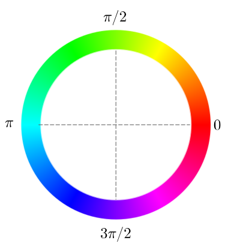
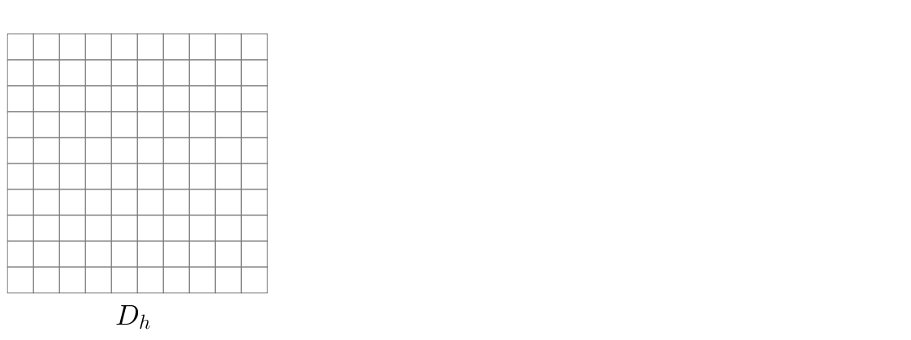
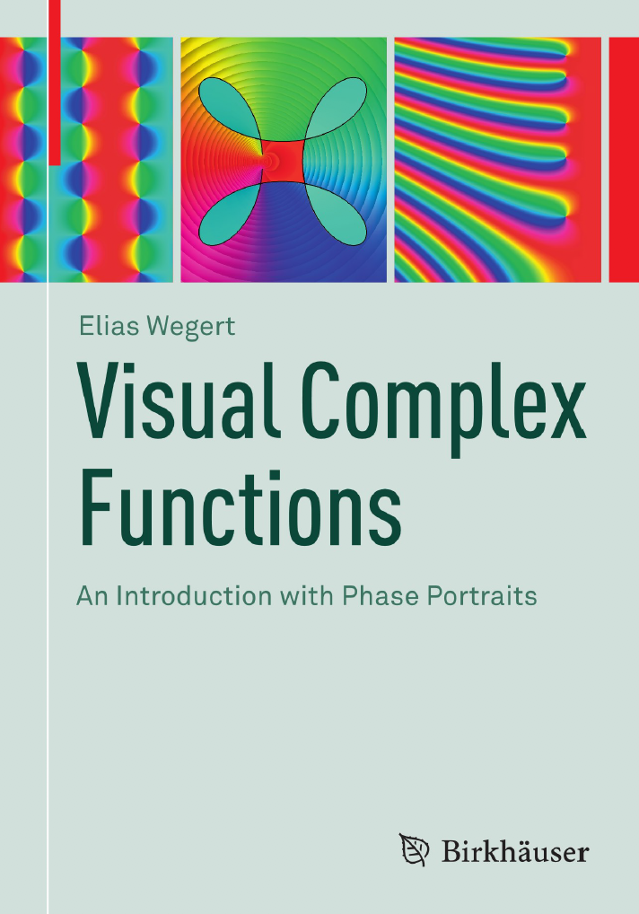

Visualizing
complex functions
Enhanced phase portraits
Complex functions
\(f: \mathbb C \rightarrow \mathbb C\)
live in a 4-dimensional space
Methods to visualize complex functions
Real and Imaginary components
\(f(z)= \text{Re}(x,y) + i\, \text{Im}(x,y)\)
Real and Imaginary components


Analytic landscapes
\[|f(z)|\]

A historical analytic landscape of \(|\Gamma (z)|\) from 1909
Funktionentafeln mit Formeln und Kurven by Eugene Jahnke & Fritz Emde
Domain coloring
Phase portraits
Domain Coloring
- Assign a color to every point in the complex plane.
- Color the domain of \(f\) by painting the location \(z\)
with the color determined by the value \(f(z)\).

The color wheel
Hue, Saturation, Brightness (HSB)
H \(\leftrightarrow\) Phase
S \(\leftrightarrow\) 1
B \(\leftrightarrow\) 1
Implementation in the computer
Implementation in the computer
-
Mathematica
-
MATLAB
-
Python
-
Java
-
C++
-
GeoGebra
-
JavaScript
-
CindyJs
-
p5.js
Mathematica
MATLAB
Python
Java
C++
GeoGebra
JavaScript
-
CindyJs
-
p5.js
Basic examples

Phase portrait
\(f(z)=z\)
\([-2,2]\times [-2,2]\)

Phase portrait
\(f(z)=\dfrac{1}{z}\)
\([-2,2]\times [-2,2]\)
Phase portrait
\(f(z)=\dfrac{z-1}{z^2+z+1}\)
\([-2,2]\times [-2,2]\)
Enhanced phase portraits
Elias Wegert’s work from 2012
H \(\leftrightarrow\) Phase
S \(\leftrightarrow\) 1
B \(\leftrightarrow\) \(\log |f|\) - \(\lfloor \log |f| \rfloor\)
\(\text{phase} - \lfloor \text{phase} \rfloor\)

Enhanced phase portrait: Level curves


Enhanced phase portraits: Modulus
Enhanced phase portrait of \(\small f(z) =\dfrac{z-1}{z^2+z+1}\)
More examples to explore...
Roots of unity: \(z^n-1\), \(n= 2, 3, \ldots , 10\)

Multiplicity of zeros & Order of poles
Analytic vs Non-Analytic functions
Laurent series
\( f(z)=\displaystyle\sum_{n=0}^{\infty} a_n(z-z_0)^n+\displaystyle\sum_{n=1}^{\infty}\frac{b_n}{(z-z_0)^n},\)
\(R_1 <|z-z_0|< R_2. \)
\[ a_n=\frac{1}{2\pi i}\oint_C \frac{f(z)dz}{(z-z_0)^{n+1}}\quad (n=0,1,2,\ldots) \]\[ b_n=\frac{1}{2\pi i}\oint_C \frac{f(z)dz}{(z-z_0)^{-n+1}}\quad (n=1,2,\ldots) \]
Poles of order \(m\): \(\exists m \geq 1, \, b_m\neq 0\) and \(b_k=0\) for \( k>m\)


Removable singularities: If \(b_n=0, \forall n\)
Essential singularities: If \(b_k \neq 0\) for infinitely many \(k\)

Zooming in
\( f(z)=\exp\left(\dfrac{1}{z}\right)\)
Other color schemes...
\(f(z)=0.926(z+0.073857 z^5 +0.0045458 z^9)\)


Thank you!
Online resources:
www.dynamicmath.xyz/domain-coloring
complex-analysis.com
Contact:
j.ponce@uq.edu.au
Designed with WebSlides